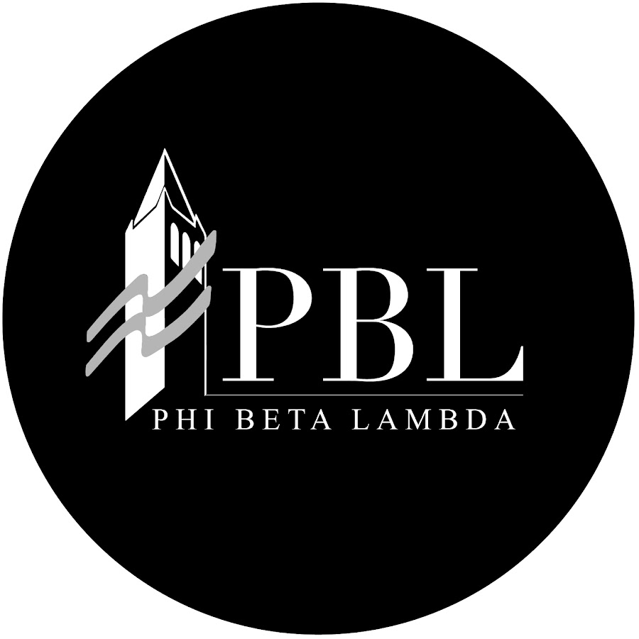

Experience

Client Consultant
I was part of a 7-person consulting team contracted by Twitter to help market their newest CSR campaign. I focused primarily on creating website and app mockups using Adobe XD and Adobe Illustrator, respectively. Through designing marketing tactics in a real-world environment, I improved my abilities in presenting ideas effectively. This project was important to me because it allowed me to discover my love for graphic design.
Intern
I analyzed how social media marketing strategies would affect the growth of the startup. I collaborated with a 5-person team to create a mockup of a Press Kit in Adobe Illustrator. We focused on efficiency and ease of navigation to present rising artists record labels. I also beta-tested the product and provided weekly reports on glitches, bugs, and design.
Research & Publications Editor
I am one of three editors managing a committee of approximately 18 members, each of whom is pursuing their own unique research project. I provide support in the technical aspects of data cleaning and analysis, and in the final writing stage. Each of the members has their own deadlines, and the editors manage them all simultaneously. My job also includes finding publication opportunities for the committee.
Technology Committee Chair
Ever since its founding, the tech committee has taught only web dev. As a chair for the Fall 2018 semester, I am completely redesigning the curriculum to provide data analysis skills more relevant to the corporate environment: R, Excel, and an intro to the Adobe Creative Cloud. I aim to equip my committee members with technical skills that they can take into any profession.
View my full resume